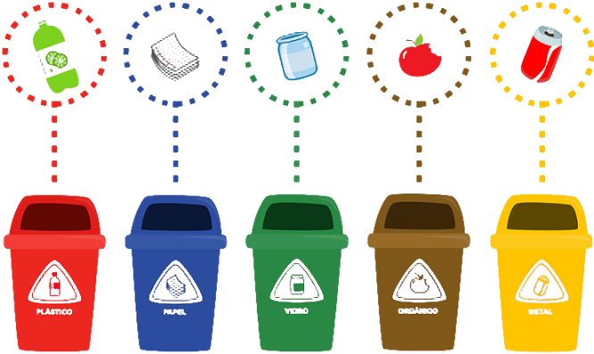
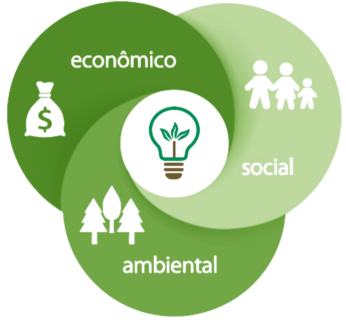
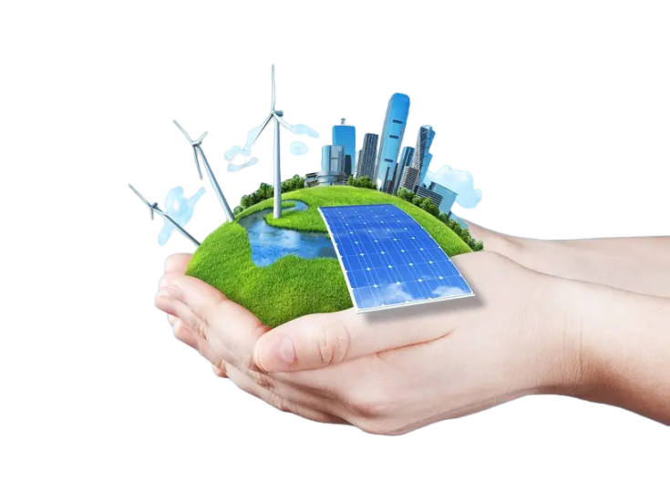

É o desenvolvimento que não esgota os recursos para o futuro.
Como reciclar?
A reciclagem é o processo de reaproveitamento de materiais descartados.
Como fazer?

Práticas Ecológicas
Práticas Ecológicas são maneiras de agir visando à preservação do meio ambiente e a melhor utilização dos recursos disponíveis, diminuindo assim os impactos ambientais.
Ela representa a busca pelo equilíbrio entre a disponibilidade de recursos naturais existentes e a sua exploração pela sociedade, com o objetivo de permitir que a geração atual se desenvolva e, ao mesmo tempo, garantir às próximas gerações a oportunidade de também dispor dos mesmos recursos para sua sobrevivência.

Como ter um estilo de vida sustentável?🌳
E as energias?
Energia sustentável é a energia produzida a partir de fontes renováveis, isto é, que não se esgotam como os combustíveis fósseis, por exemplo. Desse modo, elas podem gerar eletricidade para a sociedade atual e, no futuro, continuar abastecendo as próximas gerações

NOTÍCIAS
2024 começou com extremos de temperatura, em continuidade aos efeitos das mudanças climáticas que se intensificaram de maneira alarmante em 2023
Após queda nas temperaturas, Sul, Sudeste e Centro-Oeste devem ter fim de semana típico de outono; veja previsão
Cientistas transformam casca de banana em bioplástico para embalar alimentos
Mato Grosso do Sul decreta emergência ambiental por causa de incêndios florestais